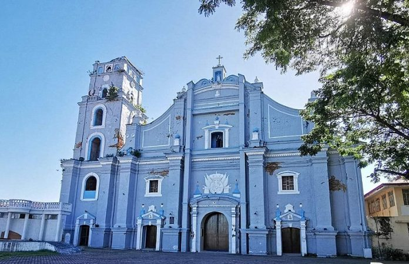

San Nicolas, Ilocos Norte
San Nicolas, Ilocos Norte
San Nicolas, Ilocos Norte
San Nicolas, Ilocos Norte
The Heritage Town of Ilocos Norte
San Nicolas is a first-class municipality located in the province of Ilocos Norte, Philippines. Known for its industrious people, it stands as one of the most progressive towns in the region. Despite its modernization, San Nicolas remains deeply rooted in Ilocano tradition and culture.
The town is famous for its Damili Pottery Industry, which showcases the creativity and craftsmanship of local artisans. It is also home to the San Nicolas Church, one of the oldest religious structures in the province, and serves as a spiritual and historical landmark for both locals and visitors.
Walking through the town, you’ll find charming ancestral houses that reflect the Spanish colonial influence of centuries past. These old structures, made of red bricks and hardwood, are a testament to the town’s architectural heritage and Ilocano craftsmanship.
Many of these homes, located near the town center and church, were built during the Spanish era and have stood the test of time. Their distinctive clay-tiled roofs, capiz-shell windows, and strong brick foundations serve as living reminders of San Nicolas’s rich history.

Damili Pottery: A time-honored craft that represents the patience and artistry of Ilocanos, forming an essential part of the town’s economy and identity.
San Nicolas Church: A centuries-old structure that stands as a symbol of faith and unity among the people.
Town Plaza: The beating heart of San Nicolas — a space for community gatherings, celebrations, and festivals.